Family Tree of Rizal
Dr. Jose Rizal, the celebrated Filipino national hero, hailed from a family deeply entrenched in the history of the Philippines. Their surname, "Rizal," traces back to Jose's grandfather, Francisco Mercado, who, inspired by the lush green fields (rizal in Spanish) surrounding their ancestral home in Laguna, adopted it. This choice wasn't just a mere change of name; it embodied their bond with the land and their hopes for a brighter future. Jose's upbringing, under the guidance of his parents Francisco and Teodora, instilled in him values of diligence, integrity, and love for his homeland. Despite their relative privilege, the family witnessed the injustices of Spanish colonial rule, motivating Jose to fight for Filipino rights. His diverse education, nurtured by his parents, laid the groundwork for his future as a scholar, writer, and revolutionary. The legacy of Dr. Jose Rizal serves as a testament to the power of individuals to enact change and the significance of preserving cultural heritage in the face of adversity.

Francisco Engarcio Rizal Mercado
(Tiniete Kiko)
Born on May 11, 1981. He was a productive farmer from Biñan, Laguna, he was also an independent-minded taciturn but dynamic gentlemen from whom Jose inherited his "free soul". He was also became the Tiniete Gobernadorcillo at Calamba, Laguna. Married to Teodora Alonzo on June 28, 1948.
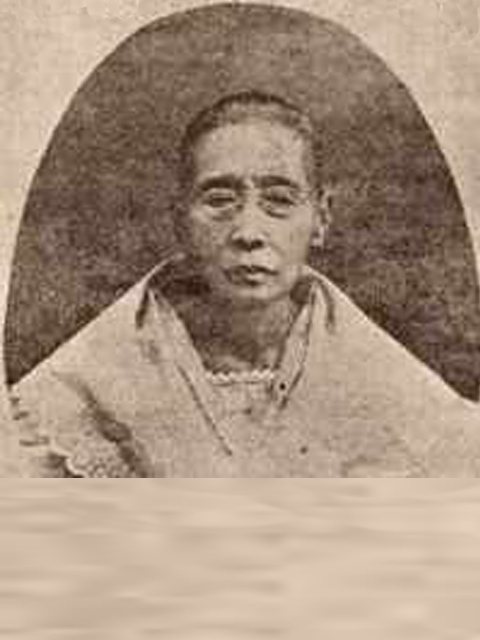
Teodora Alonso
(Lolay)
Born on November 8, 1826 at Sta. Cruz, Manila. She was educated at the college of Sta. Rosa, was a diligent business minded woman. A very greatful courageous, well-mannered, religous, and very dignified. She disliked gossip and vulgar conversation. Married to Francisco Mercado.
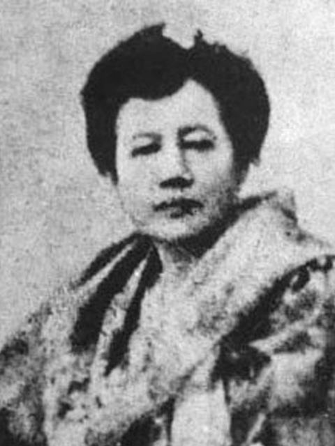
Saturnina Rizal
Eldest child, she and her mother provided little Jose with good basic education.
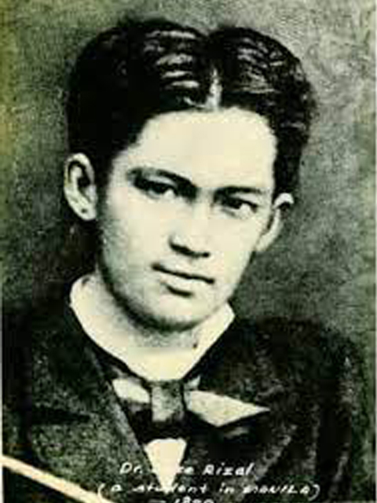
Paciano Rizal
The only brother of Jose and the second child of the family.A farmer and a general.
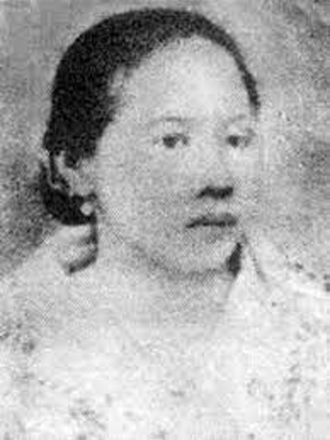
Narcisa Rizal
The third child, also known as "Sisa". She helped financing Rizal's expenses in Europe
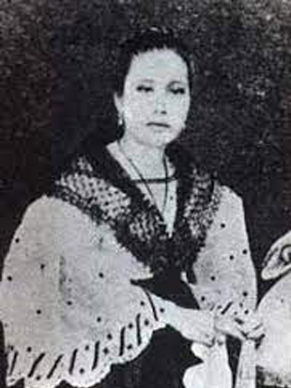
Olimpia Rizal
The 4th child of the family, Jose likes to tease her as a stout sister.
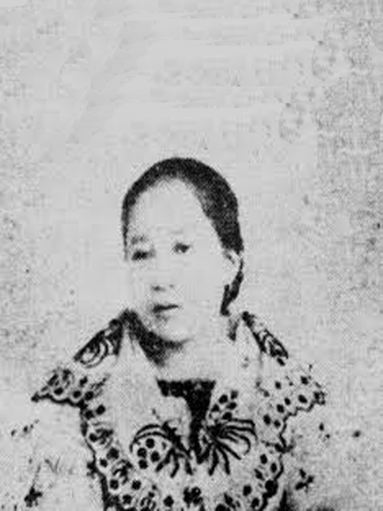
Lucia Rizal
The fifth child of the Rizal family. She had 8 children and married to Mariano Herbosa.
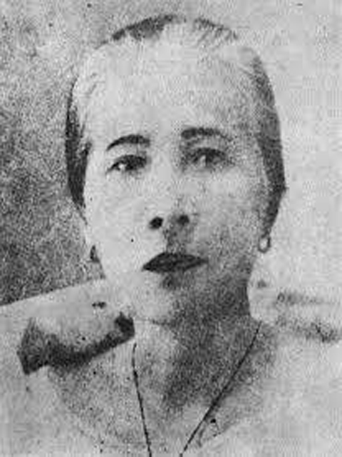
Maria Rizal
Sixth child, Jose spoke with her about his desire to wed Josephine Bracken. When it seemed that the Rizal family was not amenable to the idea, the majority of them were not.
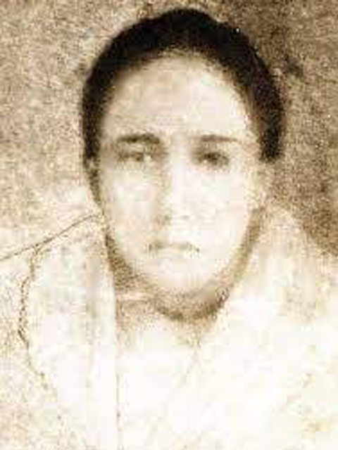
Concepcion Rizal
The 8th child of the family and Jose's first heart break. She died at the age of three.
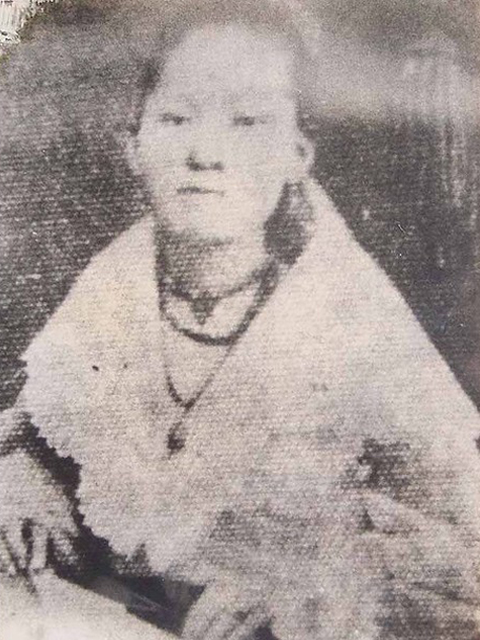
Josefa Rizal
"Panggoy" a member of the Katipunan and died a spinster. Jose did praised her for mastering English language.
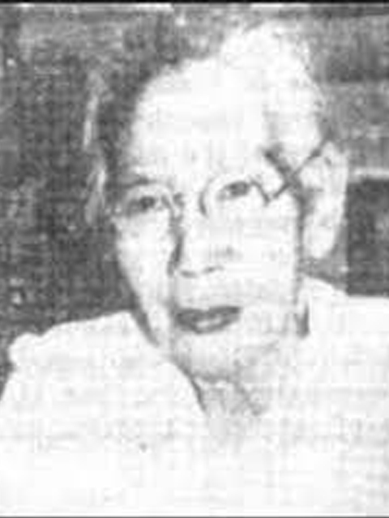
Trinidad Rizal
10th child, Trining and her mother visited Jose in Fort Santiago Prison, she later became the custodian of Rizal's last and greatest poem.
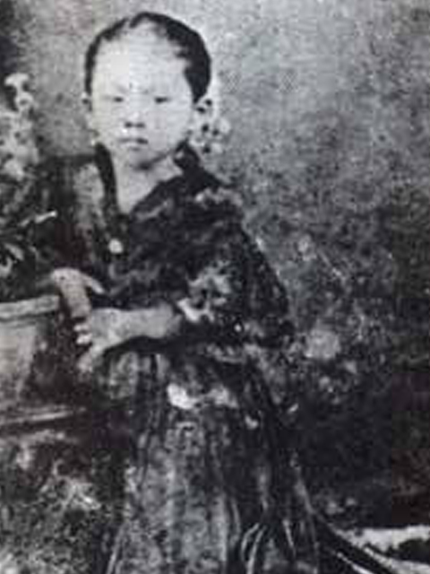
Soledad Rizal
The youngest child, her nickname was "Choleng". She was arguably the best educated among Rizal's sisters.
José Rizal (born June 19, 1861, Calamba, Philippines—died December 30, 1896, Manila) patriot, physician, and man of letters who was an inspiration to the Philippine nationalist movement. The son of a prosperous landowner, Rizal was educated in Manila and at the University of Madrid. A brilliant medical student, he soon committed himself to the reform of Spanish rule in his home country, though he never advocated Philippine independence. Most of his writing was done in Europe, where he resided between 1882 and 1892. In 1887 Rizal published his first novel, Noli me tangere (The Social Cancer), a passionate exposure of the evils of Spanish rule in the Philippines. A sequel, El filibusterismo (1891; The Reign of Greed), established his reputation as the leading spokesman of the Philippine reform movement. He published an annotated edition (1890; reprinted 1958) of Antonio Morga’s Sucesos de las Islas Filipinas, hoping to show that the native people of the Philippines had a long history before the coming of the Spaniards. He became the leader of the Propaganda Movement, contributing numerous articles to its newspaper, La Solidaridad, published in Barcelona. Rizal’s political program included integration of the Philippines as a province of Spain, representation in the Cortes (the Spanish parliament), the replacement of Spanish friars by Filipino priests, freedom of assembly and expression, and equality of Filipinos and Spaniards before the law. Rizal returned to the Philippines in 1892. He founded a nonviolent-reform society, the Liga Filipina, in Manila, and was deported to Dapitan in northwest Mindanao. He remained in exile for the next four years. In 1896 the Katipunan, a Filipino nationalist secret society, revolted against Spain. Although he had no connections with that organization and he had had no part in the insurrection, Rizal was arrested and tried for sedition by the military. Found guilty, he was publicly executed by a firing squad in Manila. His martyrdom convinced Filipinos that there was no alternative to independence from Spain. On the eve of his execution, while confined in Fort Santiago, Rizal wrote “Último adiós” (“Last Farewell”), a masterpiece of 19th-century Spanish verse.